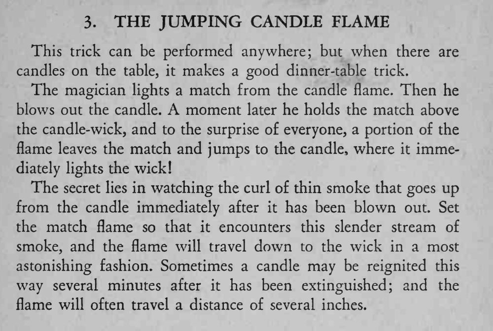

吹灭蜡烛后，魔术师把还燃着的火柴悬在烛芯上方，火苗竟一跃而下，把蜡烛重新点亮。
要趁烟刚升起时下手、火苗正对烟柱；熄了几分钟也常能再点着，距离可达数英寸。

This trick can be performed anywhere; but when there are candles on the table, it makes a good dinner-table trick. The magician lights a match from the candle flame. Then he blows out the candle. A moment later he holds the match above the candle-wick, and to the surprise of everyone, a portion of the flame leaves the match and jumps to the candle, where it immediately lights the wick! The secret lies in watching the curl of thin smoke that goes up from the candle immediately after it has been blown out. Set the match flame so that it encounters this slender stream of smoke, and the flame will travel down to the wick in a most astonishing fashion. Sometimes a candle may be reignited this way several minutes after it has been extinguished; and the flame will often travel a distance of several inches.